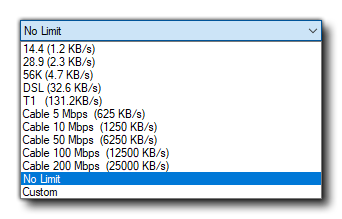

This is small tools primary function is to connect to and serve
files to some of the available target platforms for GameMaker
Studio 2 (like the HTML5 target, for example). When you run a
game on a target that requires the Micro Web Server you will get a
new window opening as the game is served to the chosen device:

The Web Server will show a certain amount of debug information
related to the files that have been served, and has a button to
clear this at the bottom. Beside the "Clear" button is the path to
the root JS file for the project, while underneath that you have
the Network Speed option. This is set to "No Limit" by
default, but clicking it will open up a list of different network
options: 
Changing this setting will also change the package Size option to the right. You can also edit this manually, in which case the Network Speed will be set to "Custom". Setting it to anything other than the maximum value will effectively throttle the network transfer speed and permit you to test games in a low bandwidth environment.
You can also see the list of allowed IPs along with the Port number being used, but these cannot be edited in the Micro Web Server and should be set instead in the Target Manager Devices settings for the given device target.